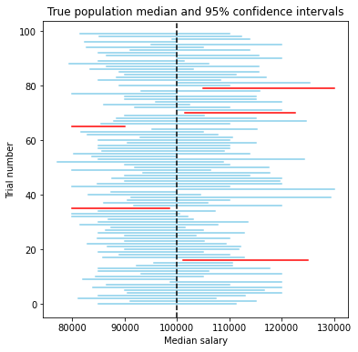

Hypothesis Tests for Parameters using Confidence Intervals¶
In the previous chapter we discovered that we can set up Hypothesis Tests about assumptions of certain characteristics of our population distribution – like it’s shape, or the value of one of its parameters.
In this chapter we’ve introduce a way to estimate a population parameter using sampling distributions and confidence intervals, sometimes even in the absence of assumptions.
Turns out, we can combine the two and use confidence intervals to test assumptions about parameters!
Chances of containing a parameter¶
Remember that a process which generates 95% confidence intervals will generate an interval containing the true population parameter 95% of the time. We looked at this using a cool visualization of a bunch of bootstrapped confidence intervals.

Another way to think about this is that it’s pretty rare that we could generate a confidence interval which doesn’t contain the true population parameter… With a 95% confidence interval this only theoretically happens 5% of the time. If we were using a 99% confidence interval, we’d expect to ever randomly compute an interval not containing the true parameter only 1% of the time – a very unlikely event!
Do you see where we’re heading with this?
Matching error probabilities¶
Suppose we’re testing if a coin is fair, so our null hypothesis is that the coin is fair, \(P(Heads) = 0.5\), and our alternative hypothesis is that it isn’t fair. We don’t have access to the entire population of coin flips (that’s infinite!) but we do have access to a sample of 100 flips.
import babypandas as bpd
import numpy as np
import matplotlib.pyplot as plt
np.random.seed(456)
heads_probability = np.random.random()
sample = bpd.DataFrame().assign(
trial=np.arange(1,100+1),
outcome=np.random.choice(
['Heads', 'Tails'],
p=[heads_probability, 1-heads_probability],
size=100
)
)
sample_props = sample.groupby('outcome').count().get('trial') / 100
sample_props.plot(kind='bar')
plt.axhline(y=0.5, c='k', linestyle='dashed')
<matplotlib.lines.Line2D at 0x7f3668215780>
Since we’re about to start a test, we should specify our level of significance, \(\alpha\). If we wrongly accuse our friend of using a coin where the chance of Heads isn’t 50%, we could end the friendship! So, we want to be very cautious about rejecting our null – let’s use a very small level of significance of \(0.01\) (this means we’ll make decisions about the null when we have less than a \(1\%\) chance of wrongly accusing our friend).
The main leap in logic comes here: If we compute a \(99\%\) confidence interval for the probability of seeing Heads, then the chance that our interval incorrectly excludes the true population parameter is \(1\%\). So if the null parameter is true, then an \(x\%\) confidence interval should only exclude it \(100-x\%\) of the time.
Conducting an HT with a CI¶
The structure is as follows:
Define the null hypothesis and alternative hypothesis for a parameter value
Define the level of significance, \(\alpha\)
Generate a \(100-\alpha\%\) confidence interval for the true parameter
If our interval excludes the null parameter it suggests that there’s a less than \(\alpha\%\) chance of this happening if the population parameter were truly the null. Since this is really unlikely, we reject the null.
If our interval includes the null parameter then we believe that the true parameter is somewhere within that interval, so it could be the null parameter. Thus, we fail to reject the null.
Let’s try it out with our coin flip example!
We’ve already determined our hypotheses:
\(H_0\): The true \(P(Heads)\) for the coin is \(0.5\)
\(H_1\): The true \(P(Heads) \neq 0.5\).
And we don’t want to falsely accuse our friend so we’re using a low level of significance \(\alpha = 1\%\).
Now it’s time to generate some \(100-\alpha\%=99\%\) confidence intervals for the probability of Heads. We’ll do so by bootstrapping the proportion of Heads in our sample.
def bootstrap_proportions(sample, trials):
"""
Generates bootstrapped proportions of Heads estimates from a sample.
"""
bootstrapped_proportions = []
for i in range(trials):
resample = sample.sample(sample.shape[0], replace=True)
boot_prop_heads = (resample.get('outcome') == 'Heads').mean()
bootstrapped_proportions.append(boot_prop_heads)
return bootstrapped_proportions
And we build our confidence interval and plot it.
Let’s also plot our null parameter so we can see if our interval contains it or not.
# Use bootstrapping to estimate a sampling distribution using our sample
boot_props = bootstrap_proportions(sample, 1000)
plt.hist(boot_props, density=True)
lower = np.percentile(boot_props, 0.5)
upper = np.percentile(boot_props, 99.5)
plt.plot([lower, upper], [0, 0], c='gold', lw=8, label='99% CI')
null_proportion = 0.5
plt.axvline(null_proportion, c='k', linestyle='dashed', label='Null proportion')
plt.title('Distribution of resample proportions')
plt.xlabel('Bootstrap P(Heads)')
plt.legend();
It looks like our \(99\%\) confidence interval didn’t contain \(0.5\).
So, if the actual probability of flipping a Heads with this coin truly was \(0.5\), then we have only a \(1\%\) chance of managing to create the confidence interval we just did – one which manages to not contain the ‘true’ parameter.
That seems pretty unlikely (less than a \(1\%\) chance), so it looks like we’re going to need to reject the null hypothesis and decide that our friend is using an unfair coin!